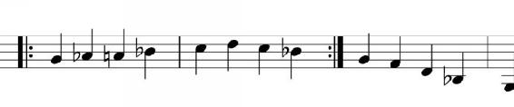

Figure 1.14.
When a section of music is to be repeated, even if it is to be varied at the end on the repetition, a repeat is often inserted into the score, marking the place where a performer is meant to stop and go back to a predetermined point in order to repeat the section. The repeat looks like a heavy double bar lines but with two black dots as shown on Fig. 1.14.